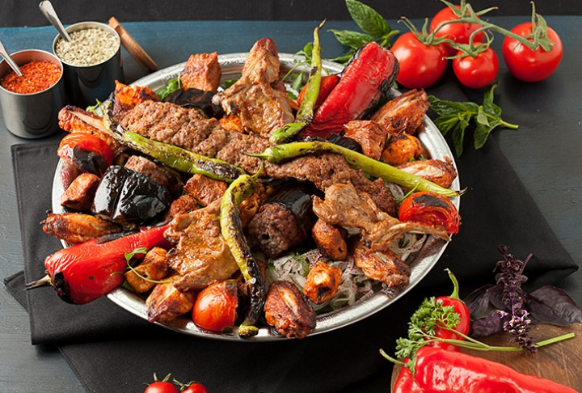

Vali Kebab Recipe

Explanation
Vali kebab, one of the lesser-known but richest kebab varieties of our
cuisine, contains tender lamb chops, chicken, and meatballs.
The Vali kebab recipe differs from traditional kebab recipes in that it
combines meat and vegetables, and also contains many different types of
meat.
Ingredients
- Mince
- Cubed Meat
- Chicken Leg
- Chicken Wings
- Eggplant
- Pepper
- Salt
- Black Pepper
- Chili Pepper
Recipe Steps
- For the Vali kebab, mix and knead all the ingredients for the meatballs.
- Give it a round form.
- Start heating the cast iron pan and add the vegetables first.
-
Next, season the chicken pieces and thread them onto skewers. Place all the ingredients in a baking dish and lightly grease it.
- First, cook the meat.
- Cook the kebabs and meatballs as well.
- The governor's kebab is ready. Enjoy your meal.